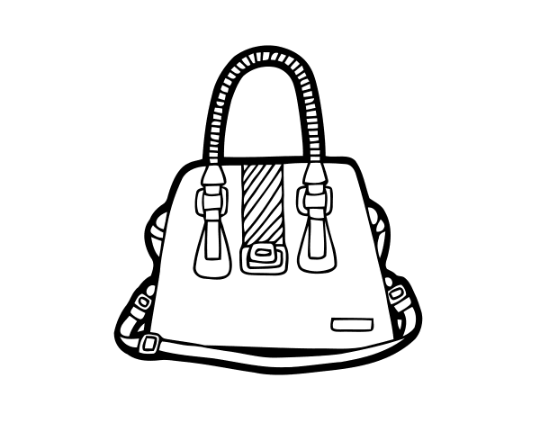
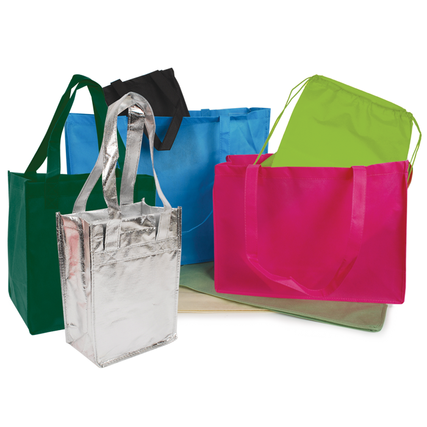
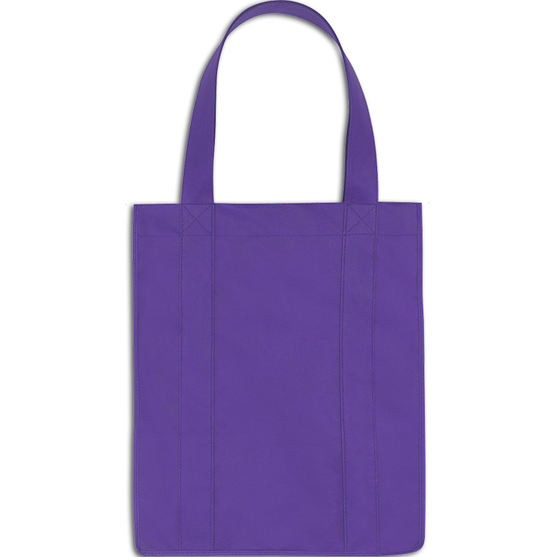

Este modelo de bolsa é o mais tradicional e confortável possível! As bolsas transversais possuem alças compridas, feitas para serem utilizadas penduradas na transversal do corpo. É comum que o tamanho delas seja médio ou pequeno, ideal para shows, baladas e festas. Quanto ao material, a imaginação é o limite: existem bolsas transversais para todos os estilos.
A transversal preta é clássica e indispensável
Qual modelo você quer ver na próxima edição?
O nome alternativo deste tipo de bolsa poderia tranquilamente ser “bolsa prática”. Sempre em tamanho grande para que se possa carregar tudo o que precisa, essa opção se encaixa em todas as estações do ano e pode compor looks bem fashionistas. Capriche na seleção de uma bolsa sacola para viagens, reuniões de trabalho, um dia na praia ou outro evento que em que precisará passar um tempo substancial fora de casa.
 Esse modelo é ótimo para passeios turísticos
Mais Tipos de Bolsas
Bolsa Baú
(1)
Bolsa Satchel
(2)
Bolsa Cluth
(3)
1. Conhecida também como bolsa bowling, ela é um modelo estruturado e elegante. Normalmente, possui uma forma grande, o que permite que você carregue tudo o que precisa e faz dela perfeita para o dia a dia. O modelo tradicional tem alças curtas e deve ser carregado nas mãos.
2. As clutches são perfeitas para festas, por transmitirem elegância, porém, também é possível encontrar modelos feitos para ambientes informais. Quando possui design sofisticado, pede brilhos e tecidos finos. Quando é feita para o dia a dia, aceita tecidos leves e trabalhos em crochê e tricô. O modelo clássico é feito para ser carregado nas mãos.
3. A bolsa satchel é conhecida por ser estruturada e ter alças para ser carregada na mão ou pendurada no ombro. Geralmente, é encontrada no formato retangular.